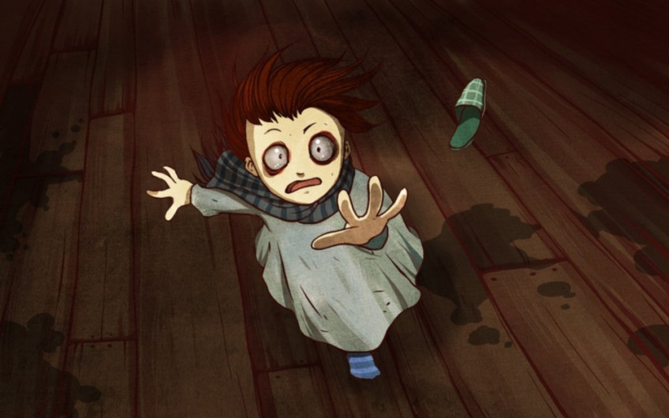
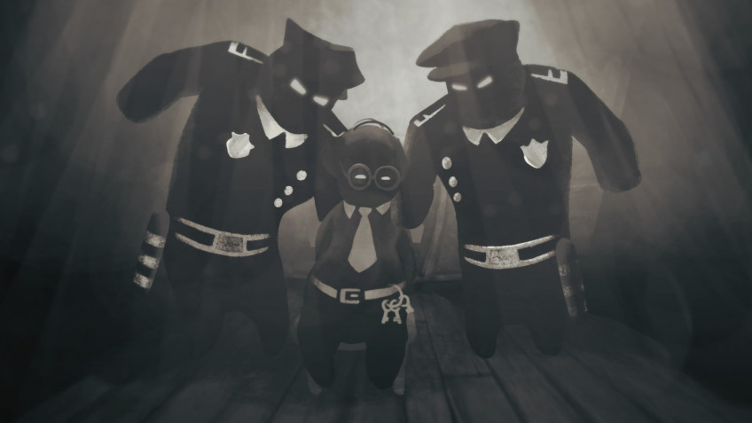
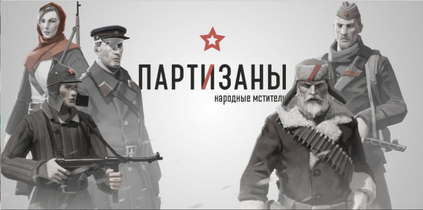

Лучшие российские игры последних лет
«Тук-тук-тук»

Десять лет назад студия Ice-Pick Lodge получила странное письмо с предложением-требованием сделать игру на основе приложенных материалов — фотографий, заметок, видеозаписей. Таинственная посылка сильно напоминала «письмо счастья» из разряда «перешли это сообщение десяти друзьям, а то твоя мама умрёт». Однако создатели «Мора» решили попытать счастья… Именно так звучит официальная версия появления на свет хоррор-выживалки «Тук-тук-тук».
Главный герой игры — некий мировед, и он, судя по всему, не особо любит покидать своё обиталище. Однако по ночам его дом и близлежащий лес становятся невероятно опасным местом. Отовсюду надвигаются страшные монстры, которых игра называет «гостями»: они просачиваются в дом через разломы, выглядящие как человеческий глаз, гасят в комнатах свет и ищут хозяина. Поначалу у героя простая задача — продержаться в живых до утра. Но потом она усложняется, когда начинает приближаться Бука и полоска нервного напряжения начинает таять на глазах… В общем, игра вышла необычной, стильной и очень странной — вполне в духе Ice-Pick Lodge. Несмотря на простоту «внешней» идеи о выходе из зоны комфорта, она даёт широчайший простор теориям, догадкам, домыслам и всяческим прочтениям. Наконец, она действительно страшная.
Хотя если оценивать её как реальный ответ на «письмо счастья», то что-то с ней не задалось: после выхода «Тук-тук-тук» следующая игра студии появилась лишь через шесть лет и оказалась финансовым провалом. Но это уже совсем другая история.
Beholder

Множество игр, сериалов, фильмов и книг всеми силами пытались внушить аудитории простую мысль: тоталитаризм — это плохо. Но мало у кого получилось донести этот посыл убедительнее, чем у авторов Beholder (почитайте, кстати, наше интервью с ними). Даже при том, что её создатели стараются не давать моральных оценок поступкам и решениям героя.
Замысел прост. Главный герой — смотритель многоквартирного дома, населённого живыми и очень разными персонажами: у каждого свои занятия, характеры, цели и проблемы. А обязанность протагониста состоит не столько в том, чтобы следить за исправностью водопровода и наличием лампочек в коридорах, сколько в бдительной слежке за жильцами и доносах о любой подозрительной деятельности. Искать нарушителей долго не придётся: у кого-то в чемоданах контрабанда, кто-то слушает запрещённое радио, а кто-то вроде бы и ничего не делает, но всё равно подозрительный… Не подбросить ли ему что-нибудь в ящик стола? За ним быстро приедут вежливые люди в форме и несимпатичный жилец сгинет где-то в застенках, но герою выплатят денежную премию. А деньги — это лекарства для жены и дочери, это образование для сына, это шанс покинуть страну и оказаться где-то в европейском раю, где не надо постоянно оглядываться.
И вроде бы кажется, что не быть сволочью легко, но на самом деле все события и решения увязаны в такой тугой клубок, что любая выбившаяся ниточка означает смерть. Или героя, или его семьи, или кого-то из обитателей дома.
Partisans 1941

В былые годы поклонники военных стратегий днями и ночами просиживали за играми серии «В тылу врага», созданными на территории Украины при участии российской компании «1С-СофтКлаб». А теперь московская студия Alter Games выпустила проект, который буквально возвращает нас в тыл врага: «Партизаны 1941». Стратегия в реальном времени вышла в Steam осенью прошлого года и уже успела обзавестись дополнением «Снова в бой».
Поскольку действие игры происходит под носом у захватчиков, а наши герои — партизаны, то основной упор сделан на тихие подрывные операции, проникновение, диверсии, шпионаж и работу с местным населением. Но это не значит, что поклонники решительных мер не могут взять в руки автоматы и выкосить всех немцев на карте: ради такого даже укрытия предусмотрены. А моменты передышек можно посвятить обустройству и развитию партизанского лагеря в глубине леса или отправить своих вояк за грибами или на рыбалку.
Выход «Партизан 1941» игроки встретили отличными отзывами. Хотя по тактической глубине и разнообразию игра не дотягивает (пока?) до лучших частей знаменитых Desperados или Commandos, тот факт, что поклонники игр о Второй мировой могут отвлечься от пляжей Нормандии и непременной клюквы, уже помещает её на почётное место в нашей подборке.
Дополнительные задачи
Задание 1
Привет!
Привет!
Привет!
Привет!
Задание 2
На момент релиза Punch Club многим было трудно поверить, что перед нами отечественный продукт. Хотя, если присмотреться, российские корни в Punch Club очень заметны: и из медведя в названии студии-разработчика, и из массы отсылок на 1980-е и 1990-е, которые лучше всего понятны обитателям СНГ. По сути, вся игра — одна сплошная отсылка к мемам, фильмам, песням, массовой культуре и реалиям тех лет. Куда ни взгляни, увидишь Терминатора, Чака Норриса, Джея и Молчаливого Боба, Бэтмена, Черепашек-ниндзя, «Мортал Комбат» и десятки, сотни, тысячи других пасхалок — вплоть до ковров и балалаек.
Герой Punch Club — талантливый начинающий боксёр, чей отец погиб от руки неведомого убийцы, которому теперь нужно отомстить: в общем, всё как в боевиках 1980-х. Для этого парень строит у себя в гараже примитивный спортзал и начинает прокачивать характеристики тренировками. А чтобы было на что жить, находит работу, заодно участвует в уличных боях, постепенно зарабатывает рейтинг, общается с друзьями… Словом, полная событий жизнь быстро начинает походить на гринд с постоянной нехваткой времени. Но процесс, как ни странно, невероятно затягивает: останавливаться ни в коем случае нельзя, если не хочется, чтоб боксёр потерял форму до того, как свершит правосудие.
Продажи Punch Club уже в первый год принесли создателям — небольшой питерской студии Lazy Bear Games (на момент работы над Punch Club в её штате состояло всего три человека) — миллион долларов. Даже убеждённые пираты признавались, что не могли не заплатить за такую игру. Так что невероятная популярность симулятора уличного боксёра стала неожиданностью прежде всего для самих создателей
Задание 4
Stoneshard хардкорная пошаговая RPG в открытом мире, которая вышла в ранний доступ ещё в начале прошлого года. Нам предстоит взять на себя роль средневекового наёмника, путешествовать по миру, сражаться с врагами и выполнять контракты. Однако будьте внимательны: герой может пострадать не только от физических ран, но и от поломанной психики, отпечаток на которую накладывают пройденные испытания.
Калибр - это попытка 1C Game Studios войти в нишу многопользовательских командных шутеров. С октября 2019 года игра, распространяемая по модели free-to-play, находится в стадии открытого бета-тестирования.
The Life and Suffering of Sir Brante — скорее интерактивная книга, чем игра. Весь геймплей — это истории из жизни наследника рода Бранте, которые появляются на пергаменте, и решения, которые мы принимаем по их поводу.
Якутская игровая студия Fntastic анонсировала свой онлайн-шутер 27 января и сразу же поймала волну хайпа. Разработчики — далеко не новички в своём деле, за их спиной уже есть мистическая адвенчура Radiant One и выживалка The Wild Eight. Однако для небольшой команды The Day Before выглядит просто сногсшибательно.
Задание 5
Pathfinder: Kingmaker, прошлая игра Owlcat Games, получилась противоречивой. По сути своей, она была одной из лучших изометрических RPG последних лет: с интересным сюжетом, прекрасными квестами, огромным миром и глубокой, проработанной боёвкой. Однако релизное состояние проекта было столь катастрофическим, что отпугнуло сотни тысяч игроков, не готовых героически преодолевать баги или ждать патчей. Теперь же российские разработчики трудятся над своей второй игрой во вселенной Pathfinder и стараются не повторить былые промахи.
Если коротко, то Pathfinder: Wrath of the Righteous — это изометрическая ролевая игра, где наша партия путешествует по глобальной карте, выполняет квесты, болтает со всеми подряд, режет врагов и становится сильнее, вкладывая очки в ветвистую систему прокачки. Уже по альфа-версии видно, что Pathfinder: Wrath of the Righteous стала симпатичнее, научилась прощать новичков за ошибки и внятно обучать механикам. Багов же пока не видно (хотя и альфа Kingmaker была куда менее забагованной, чем релизная версия). Есть и значительные нововведения, ведь теперь можно управлять не только своим отрядом из шести персонажей, но и целыми армиями. Также изменится и тон повествования, который в этот раз обещает быть куда более мрачным и жестоким.
Задание 6
Пошаговая тактическая ролевая игра, разработчиком которой является Nival, создавшая непревзойдённых пятых Героев. Одна из лучших тактических РПГ в истории. Проект использовал классическую формулу — игрок набирает команду бойцов разной специализации, бросает их в горнило пошаговых сражений, собирает трофеи и опыт. А в перерывах возвращается на базу, чтобы пообщаться с квестовыми персонажами и своими подопечными, занимается экипировкой и прочим микроменеджментом. Авторы добавили совершенно уникальную физическую модель — тела бойцов правильно реагировали на попадание и физически верно оседали на землю. Укрытия разрушались, машины и прочие ёмкости взрывались, а выстрел из гранатомёта мог обрушить часть стены или балкон, на котором засел враг, чтобы похоронить его и тех, кто засел внизу. Игра получилась достойной, особенно в сравнении со многими другими российскими играми. Всё действие разворачивается во время Второй Мировой войны в Европе. Вы выбираете сторону и выходите в игру в количестве шести человек для выполнения миссий. Для игры было так же дополнение под названием Часовые. Геймплей и в целом игра не подкачала. Однако продажи игры оставили желать лучшего. Так же игру раскритиковали за наличие элементов научной фантастики.